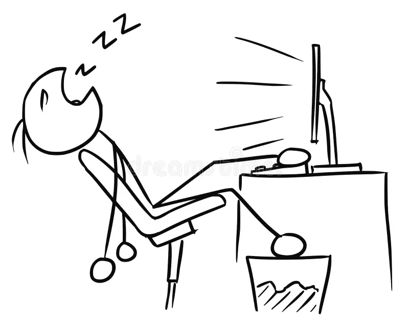

My Interests
I love to sleep — it's one of my favorite ways to recharge and dream big!
Besides that, I'm really into technology and coding. Exploring how things work behind the scenes excites me and keeps my curiosity alive.
I'm also passionate about creativity — whether that's drawing, writing, or brainstorming new ideas. It helps me express myself and relax.
Lastly, I enjoy spending time outdoors, especially when I can go for a walk, ride a bike, or just appreciate nature.